分析与索引
文档进入项目时，只要它是英语、德语或中文文档，LemmaLoom 就会自动为它建立索引，除非你在导入时另作选择。建立索引会把文本切分成句子和词，确定每个词的词典形式和词类，并计算出每个句子中所有词之间的句法结构。透镜、检查器中的语法标签页、词汇速写、关键词列表以及大多数基于词的查询，都依赖建立索引的结果。LemmaLoom 处理文档期间，你可以在阅读器中照常阅读文档并为它们编码，无需等待。
建立索引所需的时间取决于文档的长度和你的 Mac 的硬件。示例项目“气候辩论”导入时已经建立好索引。
本章其余部分沿用 LemmaLoom 状态信息中的叫法（正在建立索引、已建立索引、等待建立索引），用建立索引指 LemmaLoom 执行的这个过程，并把建立索引得到的结果称为语法分析结果，简称分析结果。
关键术语
这种分析在多个层次上拆解文本。词符、词元等术语在本指南中会经常出现，帮助 ▸ 术语表给出了其中主要术语的定义。
- 词符指单个的词或标点符号。分隔句子的每个句号都是一个单独的词符。
- 词元是词的词典形式。例如，warning 是 warnings 的词元，be 是 was 的词元，gehen 是 ging 的词元。
- 词类（也称词性）说明一个词符是名词、动词、形容词还是其他类别。三种语言共用同一套通用词类，例如 NOUN、VERB 和 ADJ。
- 标记是某一种语言专用的、更细的词性分类。英语的 warnings 标为复数名词 NNS，德语的 Klima 标为名词 NN。
- 形态记录词形的语法特征，包括时态、数和格等信息。
- 依存关系把一个词符与另一个词符配成一对，后者称为前者的中心词。依存关系还说明两者之间是什么关系。在 the most urgent steps 中，the 和 urgent 这两个词符都通过依存关系连到 steps。每个句子都有一个不依附于其他任何词的词符，这个词称为根，通常是主要动词。
- 短语结构（也称成分结构）把词符组织成层级，例如名词短语包含在动词短语之中，动词短语又处于小句结构之内。
- 名词块由一个名词和它前面修饰它的词符组成，例如 the most urgent steps；作动词主语或宾语的代词（如 we）也算名词块。
- 停用词是本身意义很少的高频词，例如 the、and 或 was。
- 最后，分析器在语法分析完成后运行，标注某一类文字，例如句子之间的衔接或修辞手法。分析器标注的文字就是它的发现。
建立索引的过程
为文档建立索引依次包括以下操作：
- LemmaLoom 确定文档的语言，语言决定它使用哪些模型。
- 与文档的从索引中排除模式相匹配的文本被替换为空白，建立索引时会跳过它。
- 文本被切分成词符和句子。中文书写时词与词之间没有空格，所以先要切分出词。
- 每个词符获得词类、标记和词元；英语和德语的词符还获得形态信息。
- LemmaLoom 找出每个句子中各个词之间的依存关系。
- 它分析出每个句子的短语结构。
- 它找出名词块和停用词。
- 内置分析器衔接、元话语和修辞运行，你自己编写的分析器也会运行。
- 所有结果与文档一起保存。
- 整个文档建立索引后，LemmaLoom 计算它的统计数据。长文档分成几个部分建立索引（见本章后文的编辑之后）。
建立索引期间，阅读器的状态栏、活动窗口以及导航栏中状态图标的悬停提示都会显示进度阶段和百分比。开始时显示分析中，直到文档处理了大约 5%；之后显示解析结构，直到大约 97%；最后显示正在存储。百分比表示文档中已建立索引的文本内容所占的比例；建立索引的大部分时间都花在解析短语结构上。
一个例句
示例项目中的评论文章“时间不多了”提出了现在需要做什么的问题，随后用“最紧迫的几步并不神秘。”一句自己作答。英语的词有词形变化，更便于说明词元和形态，所以这里采用这篇文章的英文译本“时间不多了 (英语)”中的对应句子 The most urgent steps are not mysterious. 这个句子的分析结果如下：
| 词符 | 词元 | 词类 | 标记 | 依存关系 | 中心词 |
|---|---|---|---|---|---|
| The | the | DET | DT | det | steps |
| most | most | ADV | RBS | advmod | urgent |
| urgent | urgent | ADJ | JJ | amod | steps |
| steps | step | NOUN | NNS | nsubj | are |
| are | be | AUX | VBP | ROOT | 无 |
| not | not | PART | RB | neg | are |
| mysterious | mysterious | ADJ | JJ | acomp | are |
| . | . | PUNCT | . | punct | are |
LemmaLoom 用两套不同的标注体系为文本中的词加标注。例如，在词类体系中，DET 指限定词，ADV 指副词，ADJ 指形容词，AUX 指助动词，PART 指小品词，PUNCT 指标点符号。而在标记体系中，DT 对应限定词，RBS 对应最高级副词，JJ 对应形容词，VBP 对应现在时动词，RB 对应副词。两套体系对词的分类不同，所以 not 在前者中属于小品词，在后者中却属于副词。依存关系则不描述词的属性，而是表示词与词之间的语法关系，例如 det 表示限定词，advmod 表示起修饰作用的副词，amod 表示描述名词的形容词，acomp 表示补足动词的形容词，punct 表示标点符号。语法标签页会给出所有这些缩写的完整形式，例如 NNS 显示为名词，复数；帮助 ▸ 术语表列出了全部语法代码（包括形态特征）。
关于这些标注，请注意以下几点：
- not 是一个单独的词符，否定透镜会标注它。缩写形式会切分成两个词符，所以同一段稍后出现的 cannot 切分为 can 和 not，don't 切分为 do 和 n't。否定透镜标注 n't，与标注 not 一样。
- steps 的词元是 step，所以基于词元 step 的查询或词汇速写会同时找到 step 和 steps。同样，are 的词元是 be。
- 词类只告诉你 steps 是名词，标记 NNS 则告诉你 steps 是复数。此外，形态标注以语法数 复数的形式给出同一信息，你可以在语法标签页中查看。
- 依存关系说明各个词在句中承担什么角色。steps 是 are 的主语（nsubj），mysterious 说明主语的特征（acomp），not 否定 are 所表达的动作（neg）。are 是句子的根，所以没有中心词。尽管 are 的词类是 AUX，它却是这里唯一的动词。
短语结构用另一种方式给同样的词分类。the most urgent steps 构成一个名词短语（NP），其中包含一个形容词短语（ADJP）most urgent。are not mysterious 是一个动词短语（VP），其中包含一个 ADJP，即 mysterious。最后，NP 和 VP 是小句（S）的两个主要部分。
这里只有一个名词块，即 the most urgent steps。名词块以它的名词或代词结尾，因此可能比包含它的名词短语短。这篇评论文章的英文译本开头有 the thermometer outside my kitchen window，其中的名词块是 the thermometer 和 my kitchen window，而短语结构把这整串文字看作一个名词短语。
这里的八个词符中有四个是停用词（The、most、are 和 not）。
如果想知道某个词在建立索引时是怎样标注的，请在阅读器中点按这个词，然后转到检查器的语法标签页。语法分面显示这个词的词元（与词本身不同时）、词类和标记，还显示句法功能下的依存关系、它的中心词，以及形态下的形态标注。如果你已用文件 ▸ 导入 ▸ 示例项目导入了“气候辩论”（见第 1 章“简介”中的示例项目），可以核对上述信息是否与“时间不多了 (英语)”中 steps 的标注一致。关于这个视图以及依存关系图和短语结构图，详见第 11 章“语法检查器”。
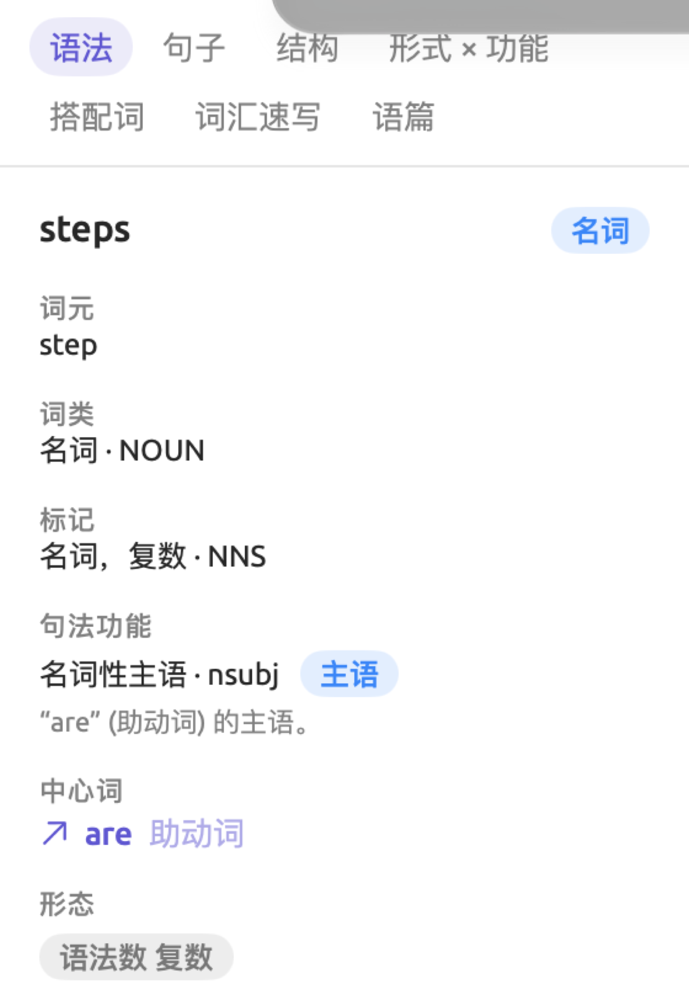
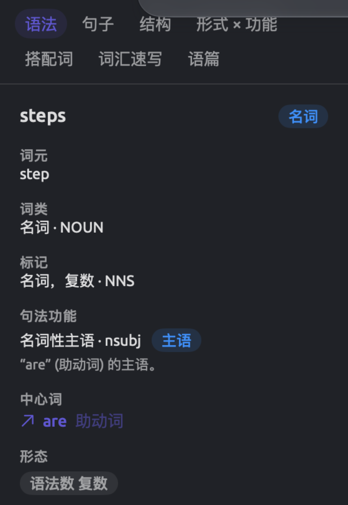
分析的来源
分析结果来自统计模型，也就是在海量文本数据上训练出来的机器学习模型，用来为文档中的每个词或每个句子选出可能性最大的分析。三种语言各有单独的模型，全部随 LemmaLoom 一起提供。LemmaLoom ▸ 关于 LemmaLoom 中有 LemmaLoom 的许可证列表，其中的许可证部分列出了所含模型的作者和许可证详情（见第 26 章“帮助与支持”中的许可证）。
这些模型有时会出错。它们主要是用书面文本训练的，因此，对于基于转写的文档、方言或因 PDF 提取而受损的文本，分析结果不那么可靠。中文的分析错误比英语和德语多，因为模型需要先找出中文的词，然后才能分析它们。
内置分析器
LemmaLoom 自带三个分析器，它们可以处理三种语言的文档：
| 分析器 | 标注的内容 |
|---|---|
| 衔接 | 每个句子如何与前文相联系，途径包括代词、领属成分、指示词（如 this）、重复的词，在中文中还有省略的主语。一个句子如果不含其中任何一种，就开启了一个新话题。 |
| 元话语 | 说话人或作者用来引导听众或读者的词语，即模糊限制语（perhaps）、增强语（clearly）、态度标记（unfortunately）、连接词（however）和介入标记（you、consider）。德语另有 ja、doch 等情态小品词，中文另有“吗”“吧”等语气助词。 |
| 修辞 | 各种修辞手法，例如被动语态、名词化（把动作变成名词，如由 decide 变成 decision）、排比、前置开头（位于主语之前的短语）、圆周句（主要动词留到句末）、疑问句和祈使句，以及以相同词语开头的句子。 |
内置分析器为研究一篇文字的写法提供了一个简便的切入点。例如，它们可以显示作者使用模糊限制语的频率，或者说话人从哪里开始转而谈论完全不同的内容。这些分析器生成的结果会出现在同名的透镜中（见第 6 章“透镜”），也会出现在语法标签页的语篇分面中（见第 11 章“语法检查器”）。返回发现的查询（见第 15 章“构建查询”）也可以引用这些分析器。你在窗口 ▸ 分析器中开发的自定义分析器与内置分析器一起运行，处理你所指定语言的文档（见第 20 章“自定义分析器”）。
统计数据与计数
LemmaLoom 为文档建立完索引后，会统计它的句子和词符。文档检查器中的文本标签页列出文档的句子数，并给出词数、可读性和词汇方面的统计数据（见第 10 章“文本检查器”）。文档的第一部分建立索引之前，文本标签页显示索引完成后即可查看统计数据。
LemmaLoom 中基本上有两种计数：
- 词符数包括所有标点符号和符号。在智能文档集中创建条件、在查询中创建规则时，选择词符字段得到的是基于词符数的结果。阅读器的状态栏同样显示词符数，标为个词。
- 词数不计标点和符号，但除普通的词外，所有数字和数词都计算在内。文本标签页使用词数，查询中使用的每万词度量也是如此（见第 16 章“查询结果与统计”中的度量）。
“时间不多了 (英语)”中的这个例句有 8 个词符（7 个词加 1 个句号）。don't 这样的缩写形式算作两个词（do 和 n't），而 2050 这样的数字算作一个词。在中文文本中，LemmaLoom 按建立索引时切分出的词逐个计数。
建立索引之前，文档的词符和句子计数在任何查询和智能文档集中都返回 0。对于其他语言（例如法语）的文档，这两个计数始终为 0。因此，一个由词符少于 1,000 的文档组成的智能文档集，也会包含所有尚未建立索引的文档。编辑现有文档之后，在索引建立完成之前，这两个计数保持最后已知的数值。字符数字段直接来自文档内容，会立即计算出来。要在等待建立索引的文档之间按长度排序或比较长度，请改用字符数。
排除在分析之外的文本
导入对话框或文档信息中从索引中排除下的模式，会阻止匹配的文本被分析（见第 4 章“导入资料”中的从索引中排除文本）。这类文本包括时间戳、说话人名称、页眉、页脚等。LemmaLoom 在为文本建立索引之前，会把每处匹配的文字替换为空白，因此这些内容不会计入词数，也不会进入关键词列表、词汇速写和内置透镜。
你仍然可以在阅读器中看到被排除的文本，也可以为它编码，搜索栏也会搜索它。如果文本匹配查询中文本行的第一个菜单保持默认设置文本，查询同样会搜索这些文本，因为这时查询读取的是文本本身。如果把这个菜单改为词、词形或词元，查询就改为比较词符，因而会跳过被排除的文本。
各种语言支持的分析
三种语言都有分词、断句、词类识别、标记、词元还原、依存句法分析、短语结构分析、名词块切分、停用词识别以及全部三个内置分析器。区别在于细节：
| 英语 | 德语 | 中文 | |
|---|---|---|---|
| 把文本切分成词 | 在空格和标点处切分；don't 切分为 do 和 n't | 在空格和标点处切分 | 由一个专门找词的模型切分，因为词与词之间没有空格 |
| 标记 | Penn Treebank | STTS（Stuttgart-Tübingen tagset） | Penn Chinese Treebank |
| 依存关系标记 | 英语标记，如 nsubj 和 dobj | TIGER 标记，如 sb（主语）和 oa（宾格宾语，即直接宾语） | 英语标记，另有中文专用的标记，例如用于“了”等体标记的 aux:asp |
| 短语标记 | Penn Treebank，如 NP 和 PP | TIGER，如 NP 和 PP | Penn Chinese Treebank |
| 形态学透镜 | 时态、数、级（比较级、最高级）、动词形式 | 与英语相同，另有格、语气和性 | 不提供 |
| 元话语类别 | 五类 | 这五类，另加情态小品词 | 这五类，另加语气助词 |
| 修辞手法 | 全部十三种 | 除独立结构外的全部手法 | 除圆周句和独立结构外的全部手法 |
| 本语言专用的透镜 | 无 | 句场（见第 6 章“透镜”中的句场（德语）） | 句式和助词（见第 6 章“透镜”中的句式与助词（中文）） |
Penn Treebank（宾州树库）、Penn Chinese Treebank（宾州中文树库）、STTS 和 TIGER 都是标准的标注体系，模型就是在这些体系上训练的。
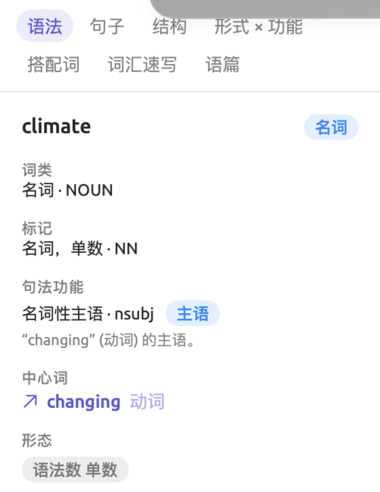
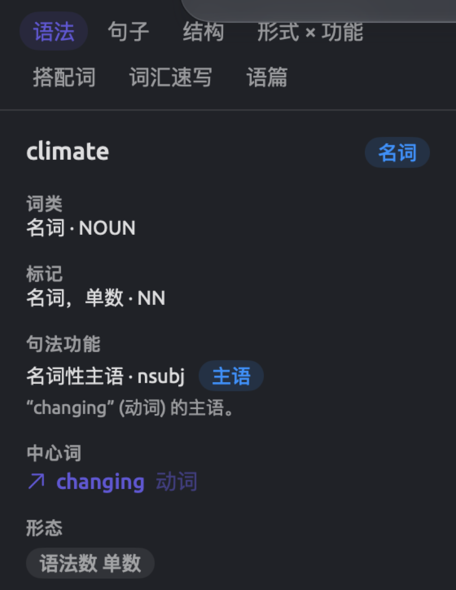
中文的词只有一种形式，所以中文词的词元始终是这个词本身。
建立索引时找出的停用词用于文本标签页中的虚词比例和查询中词的停用词字段；语法标签页的搭配词分面会忽略停用词。停用词表是 LemmaLoom 提供的内部列表，LemmaLoom 预置了英语停用词 162 个、德语 211 个、中文 153 个。如果一个词符的词形或词元与其中某个表中的条目相同（不区分大小写），它就是停用词。停用词表是固定的，所以如果要略去其他词，可以在查询时自己定义规则。
帮助 ▸ 术语表详细说明了 LemmaLoom 使用的每一个标记、依存关系标记和短语标记。在帮助 ▸ 术语表的边栏中选择一个术语类别（例如词性标记、依存关系、短语标记或形态学），然后用术语列表上方的搜索栏进行搜索。标有 EN、DE 或 ZH 的条目分别专门针对英语、德语和中文定义；没有这类标识的条目，其定义适用于全部三种语言。在透镜中以颜色突出显示的词性标记、依存关系标记或短语标记，在帮助 ▸ 术语表中也以相同的颜色显示。将鼠标指针悬停在其中一个上，可以知道哪个透镜使用这个标记。
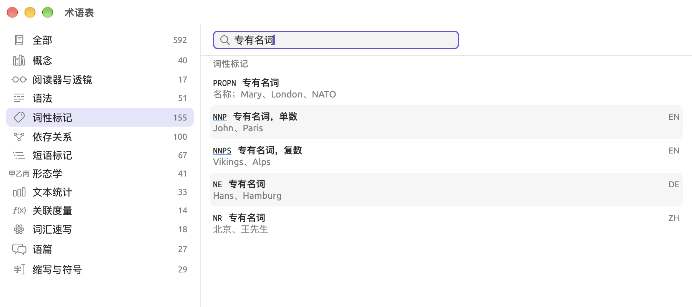
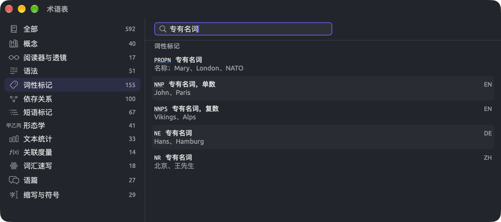
LemmaLoom 如何确定语言
在导入对话框或文档信息中设置的语言，决定了为文档建立索引时使用哪些模型。在导航栏中，语言以简短的代码显示在文档名称之后，例如 EN、DE 或 ZH；将鼠标指针悬停在导航栏中的代码上，可以看到语言的全称。
把语言设为自动，LemmaLoom 就会根据文档文本的前 4,096 个字符识别语言。对于录音，如果有转写语言，LemmaLoom 就根据转写语言识别；否则读取文档中的文本来识别。LemmaLoom 在导入时识别语言，每当你把语言改回自动并存储时，也会重新识别。以 REFI-QDA 格式导入的项目中，文档的语言也以同样的方式识别。
LemmaLoom 有时会把三种受支持的语言中的一种误认作另一种，因此在导入文档后可能用错误的模型分析它们。大批导入之后，请检查导航栏中的语言代码。如果文档的开头不能代表整个文档，或者 LemmaLoom 识别错了语言，请自己选择语言。例如，LemmaLoom 可能对一篇英语博客文章显示不支持西班牙语的语法分析；这时请在文档信息中把语言设为英语，然后点按存储。
每个文档始终整篇按同一种语言建立索引。用其他语言写成的文本片段，例如外语引文，仍按主要语言的模型分析，得出的结果并不可靠。
译文的语言由翻译的目标语言决定。因此，“时间不多了 (英语)”按英语模型分析。不论原文采用什么设置，译文开始时都会用适用于其语言的全部分析器建立索引，从索引中排除也留空；你可以在文档信息中调整任何设置。
其他语言
LemmaLoom 支持把用其他任何语言（法语、西班牙语等）写成的文档作为纯文本导入。这种文档在导航栏中的状态图标是一个问号，将鼠标指针悬停在上面会显示该语言不支持索引。在阅读器中，底部的状态栏会显示不支持法语的语法分析，其中的“法语”会换成文档实际使用的那种不受支持的语言。即使不支持这种语言，你仍然可以阅读、搜索、编辑这些文档并为它们编码，也可以在所有无需分析结果的视图中使用它们（见本章后文的无需分析即可使用的功能）。
跟踪索引进度
不论你当前打开的是哪个项目，LemmaLoom 都会为你的所有项目建立索引。LemmaLoom 最多同时为三个文档建立索引，或者同时处理一个文档的最多三个部分；其余的按顺序建立索引。如果在建立索引的过程中退出 LemmaLoom，下次启动 LemmaLoom 时，剩余的索引工作会接着进行。
需要分析某种语言的第一个文档时，LemmaLoom 才把这种语言的模型载入内存；最后一个文档处理完大约一分半钟后，再把它们从内存中卸载。
在导航栏中
导航栏中文档名称和语言代码后面的小图标显示它的索引状态。将鼠标指针悬停在图标上，可以看到状态的文字说明。这些状态也可以通过索引状态字段在智能文档集和查询中使用。
| 图标 | 索引状态 | 含义 |
|---|---|---|
| 无图标 | 已建立索引 | 文档已建立索引。 |
| 进度环，名称显示为灰色 | 正在建立索引 | 文档正在建立索引。悬停提示显示阶段和百分比，例如解析结构 35%。 |
| 进度环或旋转指示器 | 正在运行分析器 | 你在文档信息中用运行启动的分析器正在处理这个文档。例如，悬停提示显示正在运行 衔接。 |
| 虚线圆圈 | 未索引 | 文档在队列中等待（等待建立索引）。 |
| 暂停符号 | 已跳过 | 这个文档索引已关闭，因为它导入时没有建立索引（见下文导入时不建立索引）。 |
| 问号 | 不支持 | 文档使用的是其他语言（该语言不支持索引）。 |
| 红色警告三角形 | 失败 | 建立索引失败。悬停提示给出原因（见下文建立索引失败时）。 |
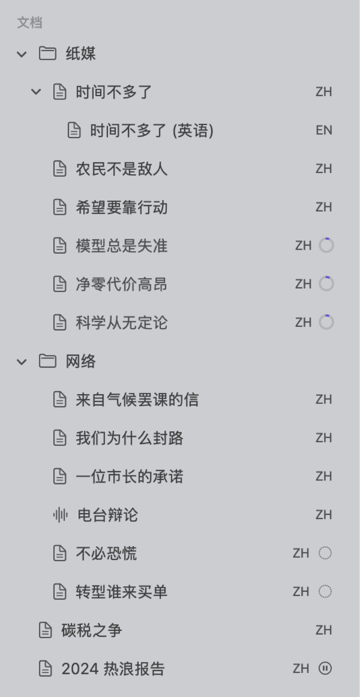
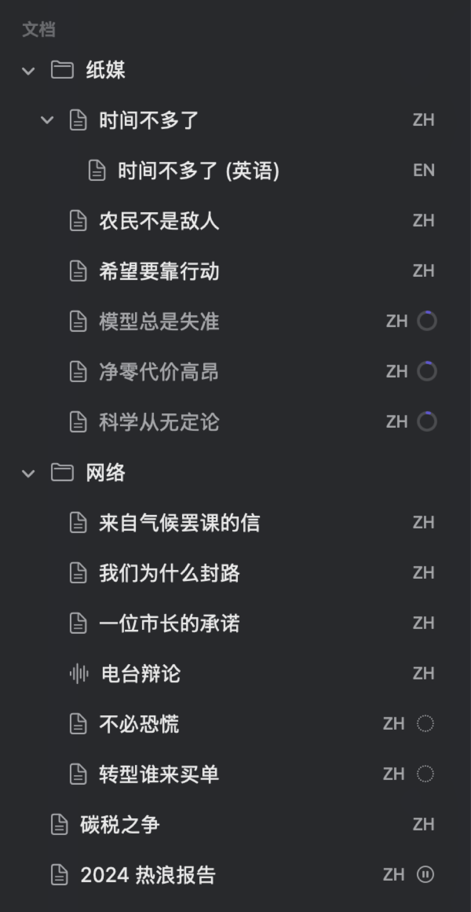
在阅读器中
文档的计数，包括段落数、句子数和词符数，显示在阅读器状态栏的最右侧。显示哪些计数取决于页边栏中显示的项目（见第 5 章“阅读与编辑”中的状态栏）。例如，“时间不多了”的状态栏显示 10 ¶ · 63 S · 1,119 个词。在索引建立完成之前，以及你用运行运行分析器期间，状态栏会改为显示以下内容之一：
- 阶段和已完成的百分比，例如解析结构 35%，并带有进度环；
- 正在建立索引和旋转指示器，表示文档正在等待轮到它（导航栏中显示为等待建立索引）；
- 正在运行加上分析器的名称，文档较大时后面还有已完成的百分比，例如正在运行 修辞；
- 索引已关闭和立即建立索引链接，适用于添加时没有建立索引的文档；
- 说明不支持该语言语法分析的提示，例如不支持法语的语法分析；
- 失败原因和重试索引链接，适用于建立索引失败的文档。
阅读器中的其他部分也要等待索引建立完成（见第 5 章“阅读与编辑”中的索引建立完成之前）。
在活动窗口中
窗口 ▸ 活动（⌥⌘0）显示所有项目中在后台进行的工作（见第 4 章“导入资料”中的活动窗口）。活动窗口的以下几个部分说明建立索引的情况：
- 正在建立索引列出正在建立索引的文档及其阶段和百分比进度，以及当前正由某个分析器分析的文档，例如正在运行 元话语 40%。
- 失败列出建立索引失败的文档，附有失败原因和用于再次尝试的重试索引链接。
- 最后，等待中列出在队列中等待轮到自己的文档，它们都标有等待建立索引状态。
每一行都注明所属项目的名称，所以要跟踪当前项目以外的项目中的索引进度，可以使用活动窗口。
按索引状态查找文档
随着文档完成索引，智能文档集的成员会自动更新。因此，在导入大量文档之后，可以用智能文档集查看哪些文档还没有准备好。按以下步骤创建智能文档集：
- 选取项目 ▸ 新建智能文档集，或者点按导航栏中文档集部分末尾的新建智能文档集。
- 在打开的对话框中，为文档集命名。
- 在条件行显示属性或标签的菜单中选择索引状态。
- 在显示是以下任一的菜单中选择不是以下任何。
- 打开显示为无的值菜单，选择已建立索引。
- 点按存储。
更改条件时，条件下方的数字会告诉你文档集中有多少个文档。这个文档集还可能包含其他语言的文档，以及正在用运行运行分析器的文档（这种情况只会短暂出现）。如果只想查看需要你处理的文档，请改为选择是以下任一，并选择失败、已跳过和不支持。
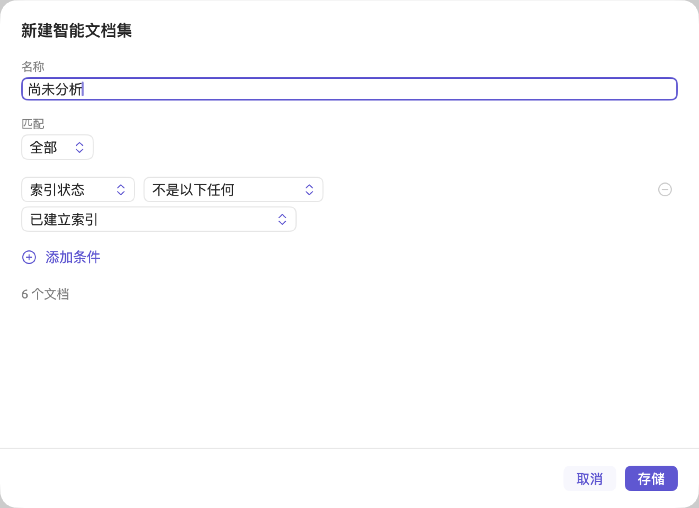
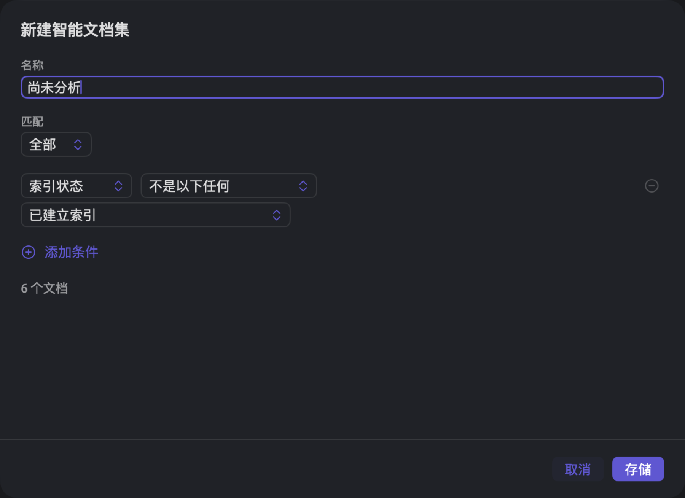
索引状态字段属于查询中的文档单位。智能文档集和查询都还有已跳过索引字段，它表示文档是否在导入时没有建立索引并且仍在等待立即建立索引。智能文档集的详细介绍见第 8 章“文档集、分组、标签和属性”。
建立索引失败时
如果为某个文档建立索引失败，导航栏中该文档旁边的状态图标会变成红色三角形警告图标，文档也会移到活动窗口的失败部分。将鼠标指针悬停在这个图标上、在导航栏中打开该文档的快捷菜单，或者查看阅读器的状态栏，都可以看到失败的原因。没有足够具体的原因可以说明时，显示的失败原因是此文档的索引失败。
你随时可以选择重试索引，再次尝试建立索引。这个选项位于以下位置：
- 导航栏中该文档的快捷菜单；
- 阅读器的状态栏；
- 活动窗口失败部分中该文档所在的行。
LemmaLoom 随后会为文档中缺少分析结果的部分建立索引，并重新运行该文档的分析器。LemmaLoom 启动时会自动重试；等待足够长的时间后，它在下一次为任何文档建立索引时也会再次重试。等待时间从一分钟开始，每失败一次加倍，最长为一小时。
如果同一个文档多次建立索引失败，请检查文档信息中的语言属性。在阅读器中找出并非真正文字的部分（例如受损的 PDF 文件产生的乱码），把它们改正或排除。如果其他办法都不奏效，欢迎通过帮助 ▸ 发送反馈报告问题（见第 26 章“帮助与支持”）。
导入时不建立索引
你可以在导入文档时先不建立索引，以后再建立。一次导入大量文档而你现在需要让 Mac 腾出资源时，PDF 提取出的文本需要先改正再建立索引时，或者文档只用于阅读和编码时，都适合这样做。
导入文档而不为它建立索引的步骤如下：
- 照常导入文档（见第 4 章“导入资料”）。
- 在导入文档或从网页导入对话框的索引部分，取消勾选为语法分析建立索引。下方的分析器列表随即不可用。
- 点按导入。
每导入一个文件，对话框就会出现一次，而且每个对话框中的复选框起初都是勾选的。要导入多个文件而不建立索引，可以在每个对话框中都取消勾选。
这样的文档即使以后内容有变，也不会加入队列。它的透镜菜单保持不可用，语法标签页中的状态显示索引完成后即可查看语法信息。
要为这个文档建立索引，请点按阅读器状态栏中的立即建立索引，或者打开文档信息并点按立即建立索引。要打开文档信息，请在导航栏中选择文档，然后选取项目 ▸ 信息；也可以右键点按文档本身，然后选取信息。在文档信息中，立即建立索引位于索引部分顶部，在索引已关闭旁边。这个按钮会立即生效。
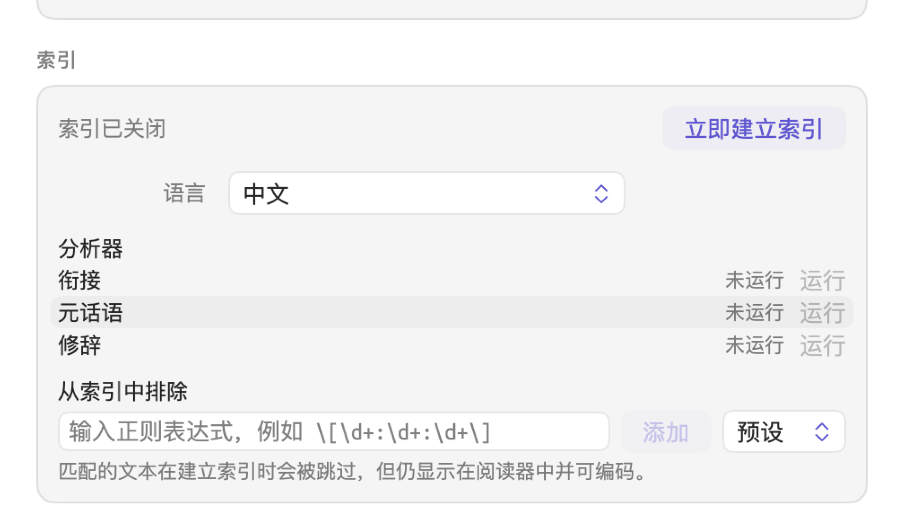
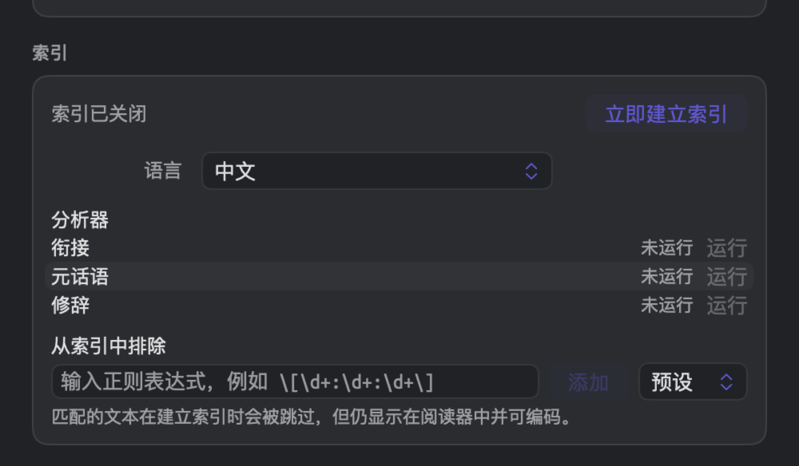
之后，文档会进入队列等待处理。如果误点了立即建立索引，可以用编辑 ▸ 撤销立即建立索引（⌘Z）把文档恢复为之前的索引已关闭状态。如果那时索引已经建立完成，文档会保留它的分析结果。
为文档选择分析器
建立索引时，所有能处理某个文档语言的分析器都会在这个文档上运行。你随时可以让某个分析器不处理单个文档，既可以在导入文档时这样做，也可以在之后任何时候，在文档信息中删除这个分析器生成的发现。当某个分析器不适合文档内容时，就可以把它排除在外。例如，修辞识别名词化、圆周句等手法；这些手法是书面文章的特点，所以你可能希望不让它分析录音转写文本“电台辩论”。如果在所有转写文本中都把它排除在外，在整个项目中查找发现的查询就只统计书面文档中的修辞手法。
让某个分析器不处理一个文档时，会发生以下情况：
- 这个分析器在该文档中的所有发现都被移除；
- 这个分析器的透镜从该文档的透镜菜单中消失；
- 在语法标签页的语篇分面中，该文档会显示类似暂无修辞手法的提示；
- 用你自己创建的分析器自动编码文档时，自动编码…会跳过之前排除了这个分析器的所有文档。
导入时选择分析器
在导入对话框的索引部分，分析器下列出各个分析器，每个都带有复选框。内置分析器排在前面，后面按字母顺序列出你自己的分析器。语言的值为自动时，列表中显示所有分析器；否则只显示能处理所选语言文档的分析器。起初所有分析器都默认勾选；请取消勾选你不想用于这个文档的分析器。
文档信息中的分析器列表
要查看或编辑项目中已有文档所关联的分析器，请按以下步骤操作：
- 在导航栏中选择文档，然后选取项目 ▸ 信息；也可以右键点按文档，然后选取信息。
- 向下滚动到索引部分。分析器列出能处理文档语言的分析器。如果文档使用的是其他语言，这里会列出全部分析器，运行不可用。
每一行都显示分析器的状态：
| 状态 | 含义 |
|---|---|
| 完成 | 分析器已用当前版本处理了整个文档。运行后什么也没找到的分析器，状态同样是完成。 |
| 已过期 | 分析器只处理了文档的一部分，或者是用较早的版本处理的。这种状态通常很短暂，因为 LemmaLoom 会自动更新它（见下文分析器何时重新运行）。 |
| 未运行 | 分析器没有在这个文档上运行过，原因可能是它被排除在外，可能是文档尚未建立索引，也可能是分析器在建立索引时出错停止。 |
| 运行中 | 分析器正在运行。在长文档中，进度环显示它的进度。 |
| 失败 | 你点按运行后，分析器出错停止。将鼠标指针悬停在失败上，可以看到错误信息。 |
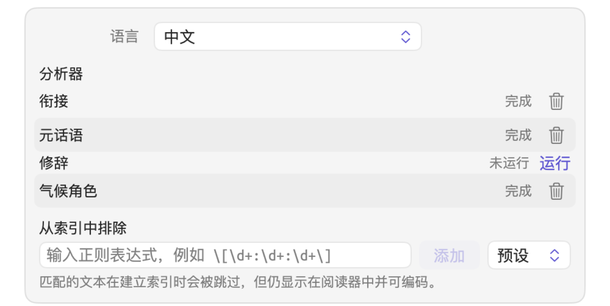
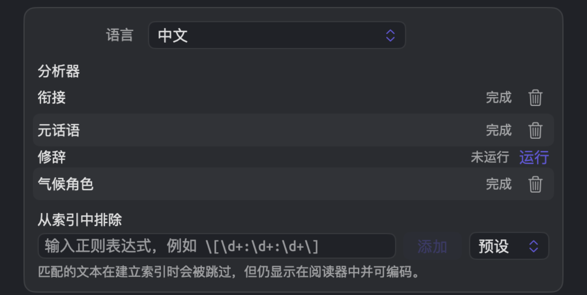
点按这个列表中的运行链接或废纸篓按钮会立即生效，即使之后点按取消也是如此。
移除分析器的输出
移除分析器的输出后，LemmaLoom 会删除它的发现，并且从此以后不再让这个分析器处理该文档。
- 打开文档的文档信息，滚动到索引部分。
- 在分析器所在的行中，点按废纸篓按钮。将鼠标指针悬停在按钮上会显示移除输出。只有状态为完成或已过期的分析器才有这个按钮。
这一行随即变为未运行。之后文档重新建立索引时（例如因为编辑），这个分析器仍保持移除状态。你可以用编辑 ▸ 撤销移除输出（⌘Z）撤销移除，恢复并重新运行这个分析器。如果以后想再次运行它，点按同一行中的运行即可。
运行分析器
- 打开文档的文档信息，滚动到索引部分。
- 在分析器所在的行中，点按运行。状态不是完成的分析器才有这个链接。
如果文档原先没有这个分析器，它会被重新加入，并立即在现有的分析结果上运行。分析期间，它所在的行显示运行中，导航栏中的状态图标、阅读器的状态栏以及活动窗口也会显示这一点，例如正在运行 修辞。如果文档原先没有这个分析器，选取编辑 ▸ 撤销运行（⌘Z）会再次把它排除在外，并移除这次运行的结果。
在索引建立完成之前，以及对于导入时没有建立索引的文档，运行不可用。将鼠标指针悬停在上面，会相应显示尚未索引或索引已关闭。
如果你自己的某个分析器在已完整建立索引的文档中显示未运行，而你从未把它排除在外，那么它很可能在建立索引时因某个错误而失败。点按运行可以再试一次。如果运行不成功，这个分析器会显示为失败。将鼠标指针悬停在失败上，可以看到与这次失败相关的错误信息。之后可以通过窗口 ▸ 分析器查找错误原因（见第 20 章“自定义分析器”）。
分析器何时重新运行
通常不需要点按运行，因为 LemmaLoom 会自动重新运行分析器。自动重新运行有两种触发情况，一是文档重新建立索引时（见重新为文档建立索引），二是你通过窗口 ▸ 分析器添加或删除自己的分析器、更新它的代码或语言，或者修改它的图例项时。
在第二种情况下，LemmaLoom 会在所有项目中，对这个分析器所适用语言的每个文档重新运行它，但你删除过其先前结果的文档除外。重新运行的只有分析器，所以比完整建立索引快得多。在此期间，所有受影响的文档都算作正在建立索引，所以它们在导航栏中的名称显示为灰色并带有进度环，而文档信息中这个分析器所在的行在完成之前可能显示已过期。
如果分析器所在的行在窗口 ▸ 分析器中显示已过期，含义则有所不同。这里的已过期表示这个分析器来自一个之后被修改过的查询。要解决这个问题，请从修改后的查询中再次存储这个分析器（见第 18 章“使用查询结果”）。
无需分析即可使用的功能
LemmaLoom 的许多功能只依赖文本内容和你的标注，所以无论文档是否已建立索引，这些功能都可以使用：
| 范围 | 无需分析即可使用 |
|---|---|
| 阅读器 | 阅读、搜索栏、选择文字、编辑文本和播放录音 |
| 标注 | 编码、备忘录、链接和书签；文本中显示编码片段和书签 |
| 检查器 | 编码标签页中的编码、编码实例、链接、编码统计和画像的马赛克；文本标签页中的详细信息（属性和标签）和书签 |
| 项目和文档集 | 编码本、编码实例、备忘录、链接、编码统计、编码矩阵和关系 |
| 词典 | 词典部分中的计数；使用词典透镜的自动编码…，它也会为文档集或项目中尚未建立索引的文档编码 |
| 查询 | 段落、文本匹配、编码实例、备忘录、书签、链接、话轮和对齐单位，以及文档、编码等资料库单位 |
| 其他 | 翻译、文档集和智能文档集、属性、标签，以及导出和交换项目 |
以下功能需要分析结果：
| 范围 | 需要分析结果 |
|---|---|
| 阅读器 | 点按选择一个词、页边栏中的句子编号、状态栏中的计数，以及在转写文本中点按一个词让播放器跳到那里 |
| 透镜 | 透镜菜单，所有透镜都是如此；索引建立完成之前，菜单不可用，悬停提示为索引完成后即可使用透镜 |
| 检查器 | 文本标签页中的统计数据；整个语法标签页；编码标签页中的编码速写和画像的编码行；多重模式标签页中的速写空间 |
| 词汇速写 | 文档、文档集或项目的词汇速写 |
| 查询 | 词、模式匹配、句子、短语、名词块和发现单位；搭配词和关键词；每万词度量，它的词数取自分析结果 |
| 自动编码 | 使用你自己的分析器透镜的自动编码…，它会跳过尚未建立索引的文档 |
| 智能文档集 | 词符和句子字段 |
这类视图涵盖多个文档时，会略去尚未建立索引的文档，并告诉你纳入了多少个文档。查询同样会在结果栏中命中数的旁边显示文档数（见第 16 章“查询结果与统计”中的略去的文档）。例如，“行动派”文档集的六个文档中有一个尚未建立索引，结果栏就显示5 / 6，表示搜索了六个文档中的五个。文档集或项目的词汇速写会显示类似已索引 13 个文档（共 14 个）的提示。
只有使用需要分析结果的单位（见上表）时，才会略去文档。如果使用不需要分析结果的单位，例如段落，查询会包含所有文档。对于尚未建立索引的文档，第一个菜单设为词、词形或词元的文本行在索引建立完成之前会像文本一样搜索文本。从所选内容查询在这些文档中进行普通的文本搜索（见第 17 章“查询模式与发现”）。
重新为文档建立索引
在 LemmaLoom 中，文档的分析结果一直有效，直到它所依赖的内容发生变化。以下更改会让文档重新进入队列：
| 更改 | LemmaLoom 的处理 |
|---|---|
| 你编辑文本并点按存储 | 重新为文档建立索引；在长文档中，通常只处理你改动的部分 |
| 编辑 ▸ 撤销编辑文本 | 同上，针对恢复的文本 |
| 你在文档信息中更改语言并存储 | 用新的语言为整个文档建立索引 |
| 你在文档信息中更改从索引中排除并存储 | 重新为整个文档建立索引 |
| 编辑 ▸ 撤销删除文档 | 为恢复的文档建立索引，因为它的分析结果已随文档一起删除 |
| 你添加、更改或删除自己的某个分析器 | 只重新运行分析器，范围是该分析器所适用语言的每个文档 |
| 编辑 ▸ 撤销移除输出 | 重新运行该文档的分析器 |
| LemmaLoom 的新版本改变了建立索引的方式 | 第一次打开新版本时，在后台重新为每个文档建立索引 |
编辑之后
存储编辑后，阅读器中显示的文本会立即更新为你修改后的内容；在新的分析结果完成之前，文本上方会显示正在存储（见第 5 章“阅读与编辑”中的存储做了什么）。在重新建立索引开始之前，你的所有编码实例、备忘录、链接和书签就已随它们所附着的文本一起移动。
需要重新建立索引的范围取决于文档的大小。以英语为例，不超过大约 80,000 词的文档作为一个整体完整建立索引，更大的文档则在段落分隔处分成多个部分。任何编辑都会让包含这处编辑的部分重新建立索引；也就是说，对大多数文章和演讲稿来说，编辑会让整个文档重新建立索引。不过，如果编辑发生在长篇的书或报告中，未改动的部分通常会保留原有的分析结果，因此新的分析结果就绪得快得多。较大的插入或删除可能把一个段落推到下一个部分，从而让它之后的各个部分也重新建立索引。
一般来说，最好在建立索引之前改正错误或进行较大的修改；例如，如果你打算大幅修改一篇很长的文档，应先导入 PDF 而暂不建立索引（见本章前文的导入时不建立索引）。
归档与交换文件
LemmaLoom 归档（.llz）包含其中文档的分析结果。从归档导入文档时，可以立即使用这些分析结果。如果归档是由建立索引方式不同的 LemmaLoom 版本生成的，其中的文档会重新建立索引。
导入的文档也会保留归档中存储的分析器发现。在任何导入文档的文档信息中，你的分析器只要归档自身的资料库无法识别，就显示为未运行；点按运行即可相应地开始分析这些文档。来自归档、而你的资料库中原本没有的分析器，会加入你的资料库。你的资料库中原有的文档，只有在下次建立索引时，或者你手动点按运行时，才会由这个分析器分析。
REFI-QDA 项目（.qdpx）存储其中的文本文档，导入后会像新文档一样建立索引。关于这两种文件格式的更多信息，请参阅第 22 章“交换与导出”。